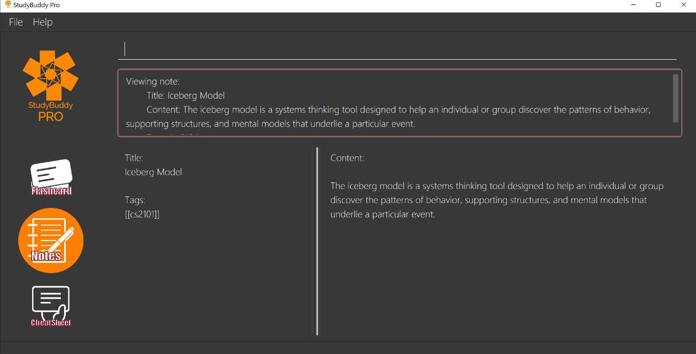

By: Team AY1920S1-CS2103T-W13-3
1. Introduction
StudyBuddyPro is a student application that aims to simplify the hassle of revision by providing a suite of tools for effective revision.
StudyBuddyPro is optimized for students who prefer to work with a Command Line Interface (CLI) while still having the benefits of a Graphical User Interface (GUI).
Moreover, StudyBuddyPro comes geared with pre-loaded features specially catered for computing students. So whether you’re a computing student getting used to a CLI for the first time or if you’re a CLI expert who wants to reap the benefits of a fast typing speed, give StudyBuddyPro a try! {To be implemented!}
If you’re interested, head over to the Quick Start section to get started!
1.1. Callouts Signs
Do refer to the signs below that will be used across the documents for references. These will prove to be useful when you are reading this document.
|
Indicates information that are to be adhere as potential problems may be encountered if you are not careful. |
|
Indicates information that are crucial to understand so that you will be able to follow the flow of the document. Confusion may arise if you do not grasp the information here. |
|
Indicates information that are note-worthy. Do read them for more information and better understandings. |
|
Indicates additional information that are helpful. Fret not, tips can be good to know but are not vital. |
2. Quick Start
| Please ensure you have Java 11 or above installed before proceeding! |
-
Download the latest version of
StudyBuddyPro.jarhere. -
Place the file in the folder you want to set as the home directory. All data and miscellaneous files associated with StudyBuddyPro will be placed in this folder.
-
Double-click
StudyBuddyPro.jarto launch the application. The GUI should appear in a few seconds. If not, please refer to the first question in the FAQ for help! -
Type a command in the command box execute it by pressing Enter. Refer to the Command Summary section for a quick overview of all the available commands!
3. Command Format / Rules
Things noted here are standardization of the User Guide. These points are absolute, unless stated otherwise in the specific section(s).
3.1. How to read the Command sections
-
Words in
UPPER_CASEare parameters to be supplied by the user. E.g.add t/TITLE→TITLEis a parameter which can be used asadd t/Midterm notes. -
Items indicated in square brackets are optional. E.g
t/TITLE [tag/TAG]can be used ast/Midterm note tag/examor ast/Midterm. -
Items with
… after them can be used multiple times including zero times. E.g.[tag/TAG]…can be used astag/friend,tag/friend tag/family.
3.2. General rules for all commands
-
All commands are written in English with alphanumeric characters.
-
Any indexes provided (denoted by '(index)' ) must be a positive integer (e.g. 1, 2, 3, …).
-
All flashcards, notes, and cheatsheets can have a maximum of 10 tags.
-
Only exact matches of any searches will be returned. E.g. "noted" will return "noted" but not "note" or "notes"
-
All searches are case insensitive. E.g. 'cs2103t' will match 'CS2103T'
4. Global Commands
Global commands in StudyBuddyPro are commands that can be called regardless of which mode the user is currently in.
4.1. Entering the various modes of StudyBuddyPro: switch
Upon startup, you will be prompted to enter one of the modes before you can proceed.
4.1.1. Getting into Flashcard mode: switch fc
Switches the user to Flashcard mode regardless of where the user is.
Format: switch fc
4.1.2. Getting into Notes function: switch notes
Brings the user to Notes mode regardless of where the user is.
Format: switch notes
4.1.3. Getting into CheatSheet function: switch cs
Brings the user to CheatSheet mode regardless of where the user is.
Format: switch cs
4.2. Viewing Help: help
A pop-up dialog box will display a URL link to a help document.
Format: help
4.3. Listing all current Tags in StudyBuddyPro : taglist
Displays a full list of all tags currently in StudyBuddyPro.
Format: taglist
Expected output: Here are all the tags in StudyBuddyPro. Listing all tags : [cs2100] | flashcards : 0 notes : 3 cheatsheets : 1 [cs2101] | flashcards : 6 notes : 2 cheatsheets : 1 [cs2104] | flashcards : 20 notes : 8 cheatsheets : 3 [math] | flashcards : 10 notes : 2 cheatsheets : 1 [pipelining] | flashcards : 1 notes : 5 cheatsheets : 2
-
The user can make use of taglist, to quickly see which tag they would like to view.
-
The user is able to view how many flashcards, notes and cheatsheets respectively there are in each tag.
-
The list of tags is also automatically sorted alphabetically.
-
If there are no longer any items with the specified tag, the tag will be removed from this list.
4.4. Listing all StudyBuddyPro items by their tag : filterall
Lists all StudyBuddyPro items with matching tags in the application.
Format: filterall tag/TAG [tag/TAG]...
Example usage: filterall tag/CS2100
Expected output:
Lists the whole StudyBuddyPro after filtering by tag(s) :
CS2100
Flashcard: 6.
Question: What is 101 Binary in its Decimal form?
Answer: 5
Title: BinaryQn
Tags: [cs2100]
CheatSheet: 7.
Title: cs2100 stuff
Tags: [cs2100]
Contents: [ 1. Pipelining is a process where a processor executes multiple processes simultaneously.]
[ 2. Question: What is 101 Binary in its Decimal form?; Answer: 5 ]
Note: 5.
Title: Pipelining Definition
Content: Pipelining is a process where a processor executes multiple processes simultaneously.
Tags: [cs2100]
Note Fragment: 6-2.
Title: About Notes
Content: highlighted
Tags: [cs2100]
| 'Note Fragments' (as seen in the example above) are described further in the Notes section (see Section 6.1). |
The user is also able to specify a multiple number of tags. For example,
filterall tag/CS2100 tag/difficult
will list all items that match all of the specified tags.
4.5. Exiting the application: exit
Checks if there are any remaining flashcards to revise for the day or overdue flashcards to revise before exiting the application.
Example usage: exit
If there are flashcards due for revision today but no overdue flashcards:
Expected output: Are you sure you want to exit? You still have the following flashcards overdue or left to revise for today: Here are the flashcards due today: 1. Math Question 1 - What is 2 x 2? Type 'exit' again to exit the application!
If there are no flashcards due for revision today but there are overdue flashcards:
Expected output: Are you sure you want to exit? You still have the following flashcards overdue or left to revise for today: Here are your overdue flashcards: 1. Math Question 1 - What is 2 x 2? (Was due on 2019-10-30) Type 'exit' again to exit the application!
If there are both flashcards due for revision today and overdue flashcards:
Expected output: Are you sure you want to exit? You still have the following flashcards overdue or left to revise for today: Here are the flashcards due today: 1. Math Question 1 - What is 2 x 2? Here are your overdue flashcards: 1. Math Question 2 - What is 3 x 2? (Was due on 2019-10-30) Type 'exit' again to exit the application!
After any of the 3 scenarios above user can override the warning by entering the exit command again.
if no remaining or overdue flashcards for revision found, application exits immediately.
4.6. Editing a tag: edit tag (proposed in v2.0)
Edits a tag by the specified index.
Format: edit tag/CURRENT tag/NEW
Example usage: edit tag/midterm tag/finals
Expected output: Tag editted! All items and contents in StudyBuddy tagged ‘midterm’ is replaced with tag ‘finals’.
Allows the user to easily modify the tags of all the items. For instance, if every item that is marked difficult does not appear hard to you anymore, you could replace all items tagged 'difficult' with a tag 'moderate'.
5. Flashcard Feature
5.1. Creating a flashcard: add
Adds a flashcard from user input question <QUESTION> and answer <ANSWER>.
Format: add q/QUESTION a/ANSWER t/TITLE [tag/TAG]...
Example usage: add q/What is 100 Binary in its Decimal form? a/4 t/Binary Stuff tag/CS2100
Expected output: New flashcard added:
Title: Binary Stuff
Statictics: This flashcard was last viewed on: 2019-11-01. This flashcard should next be viewed on 2019-11-02 for optimum revision!
Question: What is 100 Binary in its Decimal form?
Answer: 4
Tags: [cs2100]
5.2. Viewing a flashcard: view
Displays flashcard <FLASHCARD_INDEX> to user without answer.
Format: view (index)
Example usage: view 6
Expected output: Viewing flashcard:
Title: BinaryQn
Question: What is 101 Binary in its Decimal form?
Tags: [cs2100]
5.3. Revealing a flashcard’s answer: show
Displays the answer of the flashcard currently loaded.
Format: show
Example usage: show
Expected output: Flashcard answer loaded
5.4. Editing a flashcard: edit
{Coming in v2.0}
Edits flashcard <FLASHCARD_ID> by changing any field of the flashcard.
Format: edit id/FLASHCARD_ID [m/MODULE] [q/NEW_QUESTION] [f/FILE_NAME] [a/ANSWER] [t/TITLE] [h/HINT] [tag/TAG]...
-
At least one of the optional fields must be provided.
5.5. Listing flashcards: list
{Answer to be removed in v2.0}
Lists all flashcards.
Format: list
Expected output: Listed all flashcards: Question: What is my name? Answer: Sahil Title: Test Name Question 1 Statistics: This flashcard was last viewed on: 2019-10-29. This flashcard should next be viewed on 2019-10-30 for optimum revision! Tags: [pop]
5.6. Deleting a flashcard: delete
Deletes the flashcard by <FLASHCARD_INDEX>.
The user will be prompted once to confirm their deletion.
Format: delete (index)
Example usage: delete 6
Expected output: Are you sure you would like to delete the following flashcard?
Question: What is 101 Binary in its Decimal form?
Answer: 5
Title: BinaryQn
Statistics: This flashcard was last viewed on: 2019-10-31. This flashcard should next be viewed on 2019-11-01 for optimum revision!
Tags: [cs2100]
Please use `delete 6` again to confirm your deletion..
Upon hitting enter, the flashcard will be deleted.
Expected output: Deleted Flashcard:
Question: What is 101 Binary in its Decimal form?
Answer: 5
Title: BinaryQn
Statistics: This flashcard was last viewed on: 2019-10-31. This flashcard should next be viewed on 2019-11-01 for optimum revision!
Tags: [cs2100]
5.7. Time Trial: timetrial
Starts a time trial for flashcards with tag <TAG> for <TIME> seconds per flashcard.
Format: timetrial [tag/TAG]...
-
At least one tag must be specified.
-
If more than one tag is specified, selects all flashcards that contains all of the specified tags.
-
Default <TIME> will be 5 seconds.
-
Answer will be flashed for 3 seconds.
5.8. Listing by tags: filter
-
Filters the flashcard library by the user specified tag(s).
-
The user must specify at least one tag.
-
The user is able to specify multiple tags.
-
Flashcards that match all of the specified tags will be displayed.
Format: filter tag/TAG [tag/TAG]...
Example usage: filter tag/difficult
Expeted output: Filter flashcards by tag(s) : [difficult] 8. Question: What is 1+1? Title: Basic addition Tags: [difficult] 10. Question: What is 2x3? Title: Maths Tags: [difficult][important]
5.9. Remind
Reminds the user regarding the flashcards due for revision today and the flashcards
overdue for revision. Automatically suggests a new date the flashcard should next be
viewed at for optimal learning. These increments scale with time i.e. suggested viewing
dates are closer at the start and spread further after more viewings. The suggested
date for the next viewing of all flashcards can be viewed under the list command.
{Give example}
Example usage: remind
If no flashcards due for revision today and no overdue flashcards:
Expected output: Well done - No due or overdue flashcards!
If there are flashcards due for revision today but no overdue flashcards:
Expected output: Here are the flashcards due today: 1. Math Question 1 - What is 2 x 2?
If there are no flashcards due for revision today but there are overdue flashcards:
Expected output: Here are your overdue flashcards: 1. Math Question 1 - What is 2 x 2? (Was due on 2019-10-30)
If there are both flashcards due for revision today and overdue flashcards:
Expected output: Here are the flashcards due today: 1. Math Question 1 - What is 2 x 2? Here are your overdue flashcards: 1. Math Question 2 - What is 3 x 2? (Was due on 2019-10-30)
6. Notes Feature:
6.1. Creating a note: add
-
Adds a note from user input with title
TITLEand contentCONTENT. The title of the note cannot be a duplicate of an existing note title.
Format: add t/TITLE c/CONTENT [tag/TAG]...Example usage: add t/Pipelining Definition c/Pipelining is a process where a processor executes multiple processes simultaneously. tag/cs2100Expected output:
New note added:
Title: Pipelining Definition
Content: Pipelining is a process where a processor executes multiple processes simultaneously.
Tags: [cs2100]
The added Note has no detected note fragment tags!-
More advanced usage: Tagging of note fragments is also supported. The note fragment tagging is added at the same time as the note is created.
-
Note fragment tags are added with content
FRAGMENT_CONTENT, at least one tagFRAGMENT_TAG, and any number of additional tagsADDITIONAL_FRAGMENT_TAG:
Format (within CONTENT): /* C/FRAGMENT_CONTENT TAG/FRAGMENT_TAG [TAG/ADDITIONAL_FRAGMENT_TAG]... */| The format for note fragment content is 'C/', not 'c/', and the format for note fragment tags is 'TAG/', not 'tag/'. |
| If the format is not followed correctly, the note fragment tag will simply not be added (but the note will still be added). StudyBuddyPro will assume that the user typed the tags correctly. |
-
In the following example, two note fragment tags are added to the same note fragment:
Example usage: add t/About Notes c/Notes can be /* C/highlighted TAG/highlight TAG/important */ if needed. tag/aboutExpected output:
New note added:
Title: About Notes
Content: Notes can be /* C/highlighted TAG/highlight TAG/important */ if needed.
Tags: [about]
Note fragment tags detected:
Title: About Notes
Content: highlighted
Tags: [important][highlight]-
This adds a note with content "Notes can be highlighted if needed.", and a note fragment tag with content "highlighted" and two tags "cs2100" and "important".
-
Multiple note fragment tags are allowed. These do not interfere with the other tags of the Note.
| Overlapping note fragment tags are not allowed. |
Note fragment tags can be used for filtering notes (see Section 6.6), or filtering globally (see Section 4.3).
For a clearer visualization of note fragments, compare the view (see Section 6.3) and viewraw (see Section 6.4)
commands.
|
6.2. Deleting a note: delete
Deletes the note of index NOTE_INDEX.
The user will be prompted once to confirm their deletion.
Format: delete (index)Example usage: delete 3Expected output:
Are you sure you would like to delete the following note?
Title: About Notes
Content: Notes can be /* C/highlighted TAG/highlight TAG/important */ if needed.
Tags: [about]
Please use `delete 3` again to confirm your deletion.Upon hitting enter, the note will be deleted.
Deleted note:
Title: About Notes
Content: Notes can be /* C/highlighted TAG/cs2100 TAG/important */ if needed.
Tags: [about]6.3. Viewing a note: view
Views the note of index NOTE_INDEX. If the note contains any note fragment tags, those tags will be hidden.
To view the note with its note fragment tags, use the viewraw command instead (see Section 6.4).
|
Format: view (index)Example usage: view 3Expected output:
Viewing note:
Title: About Notes
Content: Notes can be highlighted if needed.
Tags: [about]6.4. Viewing a raw note: viewraw
Views the note of index NOTE_INDEX. The note is shown exactly as written, including all note fragment tags.
Format: viewraw (index)Example usage: viewraw 3Expected output:
Viewing raw note:
Title: About Notes
Content: Notes can be /* C/highlighted TAG/cs2100 TAG/important */ if needed.
Tags: [about]6.5. Listing notes: list
-
Lists all notes found in StudyBuddyPro.
Format: listExpected output:
a complete list of all notes currently in StudyBuddyProExample output:
Listing all notes:
1.
Title: Pipelining Definition
Content: Pipelining is a process where a /* C/processor TAG/mips */ executes multiple processes simultaneously.
Tags: [cs2100]
2.
Title: UML Diagrams
Content: UML Diagrams help with visualizing project structure.
Tags: [cs2103t]
Notes will be labeled with indices '1', '2' etc. Note fragment tags will not be listed along with the notes. To
visualize specific note fragment tags, use the filter command (see Section 6.6).
|
6.6. Filtering by tags: filter
-
Filters the note library by the user specified tag(s).
-
The user must specify at least one tag, and can specify multiple tags.
-
Notes that match all of the specified tags will be displayed.
-
Note fragment tags containing all of the specified tags will also be displayed, even if their parent note is not tagged.
Format: filter tag/TAG [tag/TAG]...Example usage: filter tag/difficultExpeted output: Filter notes by tag(s) :
[difficult]
2. Title: Tough Math
Content: 1 + 2 is 3.
Tags: [difficult]
4. Title: MA1521 Chapter 5
Content: dy/dx = 0 is turning point of bellcurve.
Tags: [difficult][MA1521]
5-1. Title: CS2103T
Content: sequence diagram
Tags: [difficult][diagram]| Notes will be labeled with indices '1', '2' etc. Note fragment tags will be labeled with '1-1', '1-2', '2-1' etc. '5-1' means 'the first note fragment tag in the fifth note'. |
6.7. Editing a note: edit (Coming in v2.0)
Edits a note’s title, content, or tags. The note will be referred to by their original title ORIGINAL_TITLE.
-
The user can specify one of the optional fields to edit.
Format: edit ORIGINAL_TITLE [t/TITLE] [c/CONTENT] [tag/TAG]...Example usage: edit Pipelining Definition t/Pipelined Definition tag/cs2100finalsExpected output:
Edited Note:
Title: Pipelined Definition
Content: Pipelining is a process where a processor executes multiple processes simultaneously.
Tags: [cs2100finals]7. CheatSheet Feature:
|
All the operations in this section assume that the user is in the cheatsheet mode. |
tag::cheatsheetAdd[]
7.1. Creating a Cheatsheet: add
Adds a cheatsheet from user input title <TITLE> and content <CONTENT>. Flashcards and notes in StudyBuddyPro that have the specified tag will be used as contents in the cheatsheet.
Format: add t/TITLE [tag/TAG]...
Example usage:
add t/CS2100 Midterm CheatSheet tag/cs2100midterm
|
Assuming that there is a flashcard object with the tag "cs2100midterm" |
Expected output:
New cheatsheet added: Title: CS2100 Midterm CheatSheet Tags: [cs2100midterm] 1 content(s) have been successfully generated from the other modes.
end::cheatsheetAdd[] tag::cheatsheetEdit[]
7.2. Editing a Cheatsheet: edit
Edits cheatsheet’s title, tag, content by a specified <CHEATSHEET_INDEX>. At least one of the optional fields must be specified to edit.
Format: edit (index) [t/TITLE] [tag/TAG]...
|
Example CheatSheet of index 8:
Title: cs2100 cheatsheet
Tags: [cs2100finals][formula]
Contents: [ 1. Question: What is 110 Binary in its Decimal Form?; Answer: 6 ]
[ 2. 10 + 10 = 20]
Example usage:
edit 8 t/cs2100 final cheatsheet tag/formula
Expected output:
|
The actual implementation does not show the contents in the feedback box. Please do use |
Edited Cheatsheet: Title: cs2100 final cheatsheet Tags: [cs2100finals] Contents: [ 1. Question: What is 110 Binary in its Decimal Form?; Answer: 6 ]
end::cheatsheetEdit[]
7.3. Deleting a Cheatsheet: delete
Deletes a cheatsheet by the specified index.
The user will be prompted once to confirm their deletion.
Format: delete (index)
Example usage: delete 8
Expected output:
Are you sure you would like to delete the following cheatsheet?
Title: CS2100 Finals CheatSheet Tags: [finalcheatsheet]
Contents: [ 1. Question: What is 110 Binary in its Decimal Form?; Answer: 6 ]
[ 2. 110 in Binary is 6 is Decimal ]
Please use `delete 8` again to confirm your deletion.
Upon hitting enter, the specified cheatsheet will be deleted.
Expected output: Deleted Cheatsheet:
Title: CS2100 Finals CheatSheet Tags: [finalcheatsheet]
Contents: [ 1. Question: What is 110 Binary in its Decimal Form?; Answer: 6 ]
[ 2. 110 in Binary is 6 is Decimal ]
tag::cheatsheetView[]
7.4. Viewing Cheatsheets: view
Views a cheatsheet by the specified index.
Format: view (index)
Example CheatSheet of index 1:
Title: cs2100 cheatsheet
Tags: [cs2100finals][important]
Contents: [ 1. Question: What is 110 Binary in its Decimal Form?; Answer: 6 ]
[ 2. 10 + 10 = 20]
Example usage:
view 1
Expected output:

view 1 expected outputThe above screenshot shows the cheatsheet with index 1 in the GUI of StudyBuddyPro.
end::cheatsheetView[]
tag::cheatsheetViewSpecific[]
7.5. Viewing Cheatsheets of Specific Tag: show
Views a cheatsheet’s content for a specified tag. User must be in a view command before using show command.
Format: show (index)
|
Assuming user is in the |
Example usage:
show 1
Expected output:
|
Currently, cheatsheets only allow contents that match all the specified tags. Hence, |
show 1 expected outputThe above screenshot shows the cheatsheet’s content with tag index 1 in the GUI of StudyBuddyPro.
end::cheatsheetViewSpecific[]
tag::cheatsheetList[]
7.6. Listing Cheatsheets: list
Lists all cheatsheets found in StudyBuddyPro.
Format: list
end::cheatsheetList[]
7.7. Listing by tags: filter
-
Filters the cheatsheet library by the user specified tag(s).
-
The user must specify at least one tag.
-
The user is able to specify multiple tags.
-
CheatSheets that match all of the specified tags will be displayed.
Format: filter tag/TAG [tag/TAG]...
Example usage: filter tag/difficult
Expeted output: Filter cheatsheet by tag(s) : [difficult] 2. Title: Tough Math Tags: [difficult][math] Content: [ 1. Question: What's 1+1; Answer: 2 ] [ 2. Question: what is 100 + 10; Answer: 110 ] 7. Title: MA1521 Chapter 5 Tags: [difficult] Content: [ 1. dy/dx is a process where mathematicians..] [ 2. Question: what is dy/dx?; Answer: find gradient]
tag::cheatsheetUpdate[]
7.8. Updating a Cheatsheet: update (Coming in v2.0)
Updates cheatsheet’s contents by a specified <CHEATSHEET_INDEX>. Tags specified are added into the list of tags for the cheatsheet if it not already exist.
|
This command may overwrite any customization of contents done prior to it as the cheatsheet’s contents will be regenerated. |
Format: update (index) [tag/TAG]...
Example CheatSheet of index 8:
Title: cs2100 cheatsheet Tags: [cs2100finals] Contents: [ 1. Question: What is 110 Binary in its Decimal Form?; Answer: 6 ]
Example usage 1:
update 8
Expected output:
|
The actual implementation does not show the contents in the feedback box. Please do use |
Updated Cheatsheet:
Title: cs2100 final cheatsheet
Tags: [cs2100finals]
Contents: [ 1. Question: What is 110 Binary in its Decimal Form?; Answer: 6 ]
[ 2. Binary is in bits of 1 and 0.]
Example usage 2:
update 8 tag/formula
Expected output:
|
The actual implementation does not show the contents in the feedback box. Please do use |
Updated Cheatsheet:
Title: cs2100 final cheatsheet
Tags: [cs2100finals][formula]
Contents: [ 1. Question: What is 110 Binary in its Decimal Form?; Answer: 6 ]
[ 2. 10 + 10 = 20]
end::cheatsheetUpdate[]
8. FAQ
Q: Help! Double-clicking StudyBuddyPro.jar does not launch the application - what
should I do?
A: Trying running the application from the command line using the following command:
java -jar StudyBuddyPro.jar. Windows users can use the Command Prompt application to
do this while Mac users can use the Terminal application.
9. Command Summary
{To be added}